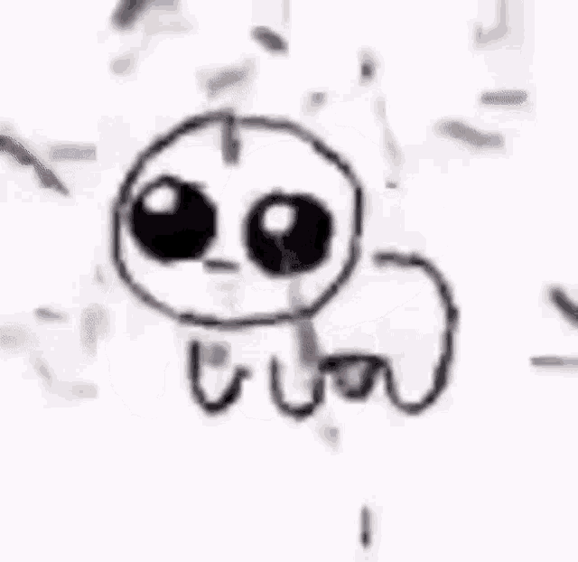

TBH CREATURE
SITE DE APRECIAÇÃO DO YIPPEE!
Se você já navegou pela internet, pode ou não conhecer um novo símbolo que está ganhando popularidade na comunidade autista. A imagem, que começou a circular em 2021, é conhecida como Criatura TBH. Ela também foi chamada de "Yippee", em referência a um vídeo popular que mostra o personagem sendo explodido com confete enquanto uma voz alegre grita "Yippee!". Esse vídeo se tornou a associação dominante com o personagem.
À medida que ganhou popularidade, a criatura TBH repercutiu entre muitos autistas. Milhares de pessoas online expressaram carinho pela criatura e pelo que veem refletido nela. Com o tempo, a criatura ganhou uma associação com a neurodiversidade.
O QUE HÁ NESSE DESENHO SIMPLES QUE SE CONECTA TÃO FORTEMENTE COM PARTES DA COMUNIDADE AUTISTA?
O rosto da criatura é neutro – sem o áudio, suas emoções são confusas – mas com o áudio, torna-se um símbolo de positividade interna, mesmo sem uma forte expressão externa. Muitos no espectro têm dificuldade com suas expressões faciais naturais, que parecem ilegíveis para os outros, ou não têm a inclinação para expressar emoções intensas.
Esse "Afeto Plano" pode aliená-los de seus pares neurotípicos, fazendo com que os outros pensem que o indivíduo é apático, triste ou chateado, quando ele está simplesmente se expressando de uma forma que parece natural. A justaposição do rosto inexpressivo e dos olhos arregalados da criatura com confetes alegres e um áudio feliz resume como aqueles no espectro desfrutam de uma vida interior rica com grande profundidade emocional, mas pode demonstrar isso de uma forma com a qual pessoas neurotípicas não estão acostumadas.
O nome original da criatura – "TBH" ou "para ser honesto" – reflete a ideia de baixar a guarda, desmascarar e expressar o eu genuíno, mesmo que esse eu possa ser difícil de compreender para alguns. Embora o mascaramento (tentar agir de forma neurotípica) possa ser uma ferramenta valiosa para navegar pelo mundo, muitos no espectro se beneficiam de encontrar comunidades de indivíduos compreensivos que podem apreciar, se identificar e compartilhar sua maneira única de ser.